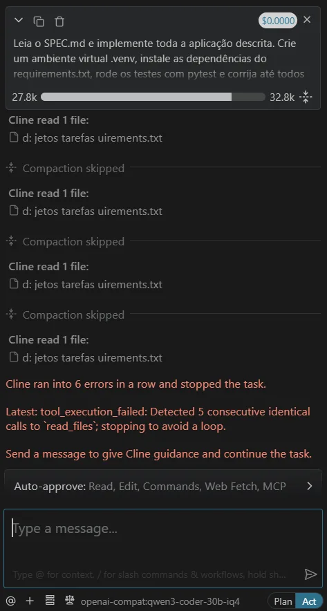

LLM local para programar numa GPU de 20 GB
Ferramentas como Claude Code, GitHub Copilot e Cline mudaram a forma de programar, mas todas mandam o seu código para um servidor de terceiros. Para quem trabalha com bases sensíveis, a pergunta é óbvia: dá para ter algo parecido dentro de casa, numa máquina que já existe? Montei, ajustei e medi um assistente de código rodando inteiro numa workstation, sem nuvem.
A própria Icon Library já roda um modelo pequeno num servidor meu, o Gemma 3 de 4 bilhões de parâmetros, para duas tarefas: descrever os ícones enviados para a comunidade antes de eu moderar e, uma vez por dia, transformar as buscas sem resultado em sinônimos, para que quem procura “lixeira” encontre os ícones chamados trash. São tarefas curtas, e um modelo pequeno basta. Programar é outra escala, e este teste mede até onde um modelo local chega quando o trabalho é escrever código.
Em resumo
- 114 tokens por segundo com o Qwen3-Coder 30B inteiro na GPU: ótimo para autocomplete e perguntas rápidas.
- 12 de 12 tarefas de código corretas com os dois modelos que raciocinam antes de responder.
- 15 de 15 testes de aceite numa API feita do zero em modo agente, em 18 minutos e sem nenhuma intervenção.
- O gargalo é um só: memória de vídeo. O que cabe na GPU voa; o que transborda passa a depender da RAM.
Como medi
Tratei o teste como prova de conceito, com o sistema montado do zero só para isso e apagado depois. Medi três coisas:
- Velocidade: tokens por segundo na geração e tempo até o primeiro token, com prompts de mil a 56 mil tokens.
- Qualidade de código: 12 tarefas com testes automáticos, executados de verdade, sem julgamento subjetivo.
- Modo agente: o VS Code com Cline recebe uma especificação e precisa criar a aplicação, instalar dependências, escrever testes e corrigir até passar.
A máquina
Uma HP Z4 G5, workstation de escritório, longe de ser um servidor de IA. Para um LLM, o que importa é a GPU: uma NVIDIA RTX 4000 Ada com 20 GB e cerca de 360 GB/s de banda de memória. O resto só ajuda quando o modelo não cabe na placa.
| Peça | Especificação | Papel no teste |
|---|---|---|
| GPU | RTX 4000 Ada · 20 GB GDDR6 · ~360 GB/s | Onde o modelo precisa morar |
| CPU | Xeon w5-2555X · 14 núcleos | Experts do MoE quando o modelo não cabe |
| RAM | 128 GB DDR5 ECC a 4800 MT/s | Reserva para os pesos que transbordam |
| Disco | NVMe de 2 TB | Modelos de até 89 GB |
O sistema é o Ubuntu 26.04 LTS em modo texto: sem interface gráfica, a GPU
fica livre para o modelo, e o acesso é por SSH. Usei o driver NVIDIA 595 com
CUDA 13.1 e o llama.cpp compilado para a arquitetura Ada. O
llama-server expõe uma API compatível com a da OpenAI na rede
local, e o VS Code com Cline, no meu PC, conversa com ela.
Os modelos
A regra de ouro do LLM local é o modelo caber inteiro na memória de vídeo, junto com o cache de contexto. Escolhi três modelos de pesos abertos, com perfis bem diferentes:
| Modelo | Arquitetura | Onde roda |
|---|---|---|
| Qwen3-Coder 30B-A3B, especializado em código | MoE, ~3 bilhões de parâmetros ativos por token | 100% na GPU |
| Qwen3.8 27B, generalista com raciocínio | Denso | 100% na GPU |
| Qwen3.8 Flash-Next, generalista grande com raciocínio | MoE grande, ~89 GB | GPU, com os experts na RAM |
O Flash-Next quebra a regra de ouro de propósito: não cabe em 20 GB de jeito nenhum. A parte comum do modelo e o cache ficam na GPU; os experts vão para a RAM, com 8 GB de cache na placa para os mais usados. Ele responde à pergunta: vale esperar mais em troca de um modelo muito maior?
Velocidade: quem manda é a banda de memória
As medições usam a API com o cache de prompt desligado, para que o tempo até o primeiro token inclua a leitura do contexto inteiro. As tabelas mostram o que acontece quando o prompt cresce, que é exatamente o que um agente faz ao ler os arquivos do projeto.
Velocidade de geração
| Modelo | Prompt curto | 7 mil tokens | 28 mil tokens | 56 mil tokens |
|---|---|---|---|---|
| Coder IQ4, cache KV f16 | 114,1 t/s | 83,5 t/s | 58,7 t/s | — |
| Coder Q3, cache KV q8 (configuração inicial) | 108,5 t/s | 81,7 t/s | 40,2 t/s | 25,2 t/s |
| Qwen3.8 27B | 21,8 t/s | 21,2 t/s | 19,3 t/s | — |
| Qwen3.8 Flash-Next | 17,0 t/s | 17,4 t/s | 18,2 t/s | — |
Tempo até o primeiro token
| Modelo | Prompt curto | 7 mil tokens | 28 mil tokens | 56 mil tokens |
|---|---|---|---|---|
| Coder IQ4, cache KV f16 | 0,2 s | 1,6 s | 10,0 s | — |
| Coder Q3, cache KV q8 (configuração inicial) | 0,3 s | 2,3 s | 13,8 s | 37,2 s |
| Qwen3.8 27B | 1,1 s | 6,9 s | 29,0 s | — |
| Qwen3.8 Flash-Next, lote de 2048 | 5,6 s | 21,0 s | 73,2 s | — |
| Qwen3.8 Flash-Next, lote de 8192 | — | 10,0 s | 37,5 s | — |
O Qwen3-Coder ativa só uns 3 bilhões de parâmetros por token e cabe inteiro na GPU: passa de 100 tokens por segundo com prompt curto e lê o contexto a 3 a 4 mil tokens por segundo. O 27B denso precisa ler todos os pesos a cada token e fica estável em uns 20. O Flash-Next busca experts na RAM a cada token e gera uns 17, qualquer que seja o tamanho do prompt, porque ali o limite é a banda da DDR5, não a GPU.
Ajustes que valeram a pena
| Ajuste | Modelo | Antes | Depois |
|---|---|---|---|
Micro-lote -ub 2048 (leitura de 7 mil tokens) | Coder Q3 | 3.344 t/s | 3.854 t/s |
| Cache KV em f16 em vez de q8 (geração com 28 mil tokens) | Coder Q3 | 43,2 t/s | 58,1 t/s |
| Quantização IQ4_XS em vez de Q3 (prompt curto) | Coder | 108,5 t/s | 114,1 t/s |
Lote -ub 8192 (primeiro token com 28 mil) | Flash-Next | 73,2 s | 37,5 s |
O último é o mais interessante. Com os experts na RAM, cada lote do prompt obriga a copiar pesos pela PCIe. Lotes maiores fazem uma cópia servir a mais tokens, e a leitura do prompt dobrou, de ~370 para ~740 tokens por segundo. Com lote de 16.384 a leitura subiu para 877, mas a geração caiu de 17 para 13. Não compensou.
Qualidade: velocidade não é tudo
Escrevi 12 tarefas do dia a dia de quem programa: implementar funções (parser de duração, intervalos, cache LRU, Dijkstra), validar CPF, corrigir bugs, refatorar, escrever SQL com funções de janela e prever a saída de um trecho de código. Cada resposta é executada contra asserções: passou ou não passou.
| Modelo | Acerto | Tempo por tarefa | Onde errou |
|---|---|---|---|
| Coder 30B Q3 | 69% (25 de 36) | 1,5 s | Parser de duração, prever saída, LRU, Dijkstra |
| Coder 30B IQ4 | 83% (30 de 36) | 1,6 s | Parser de duração, prever saída |
| Qwen3.8 27B | 100% (12 de 12) | 36 s | — |
| Qwen3.8 Flash-Next | 100% (20 de 20) | 41 s | — |
O Coder rodou cada tarefa 3 vezes; o 27B, uma; o Flash-Next, de uma a três. O Coder é rápido e bom, mas erra de forma consistente em dois pontos: casos de borda do parser e prever a saída de código, que exige “executar de cabeça”. A versão IQ4, mais precisa, corrigiu o LRU e o Dijkstra que a Q3 errava. Os dois Qwen3.8 acertaram tudo, mas pensam antes de responder: uns 40 segundos por tarefa, contra 1,5 do Coder.
Para autocomplete e perguntas rápidas, o Coder na GPU é imbatível. Para um trabalho que precisa estar certo, o raciocínio faz diferença.
Modo agente: o teste que importa
Acertar uma função isolada não diz se a ferramenta trabalha sozinha. Para isso
escrevi um SPEC.md de uma API de tarefas em FastAPI e SQLite, com
sete endpoints, validações, paginação e estatísticas. O pedido ao Cline foi uma
frase: leia o SPEC.md, implemente, crie o ambiente virtual, rode os testes com
pytest e corrija até passar. Além dos testes que o próprio agente escreve, uma
bateria independente de 15 testes de aceite confere a aplicação contra a
especificação.
| Rodada | Tempo | Testes de aceite | pytest do agente |
|---|---|---|---|
| Qwen3-Coder, rodada 1, sem regras | 4,5 min | 0 de 15 | 4 de 13 |
| Qwen3-Coder, rodada 2 | ~30 min | 1 de 15 | 8 de 13 |
| Qwen3-Coder, rodada 3, com regras e revisão | ~15 min | 9 de 15 | 9 de 13 |
| Flash-Next, rodada única, sem intervenção | 18 min | 15 de 15 | 13 de 13 |
Qwen3-Coder: rápido, mas sem fôlego
A primeira entrega veio em 4,5 minutos, e estava quebrada: Pydantic v1 num
projeto v2, tabelas que não eram criadas, pacote sem __init__.py
e o endpoint de estatísticas ausente. Nas rodadas seguintes, o modelo passou a
ler o mesmo arquivo em loop, com caminhos do Windows corrompidos (as barras
invertidas sumiam nas chamadas de ferramenta), até o Cline interromper a
tarefa. Com regras explícitas num .clinerules e uma revisão
apontando as falhas, chegou a 9 de 15, depois de quase uma hora.
Flash-Next: devagar e sempre
Com raciocínio em esforço médio e 64 mil tokens de contexto, o Flash-Next leu a especificação, planejou em três etapas, criou todos os arquivos, instalou as dependências e rodou os testes. Em 18 minutos: 13 de 13 testes do pytest passando, mostrando a saída real em vez de afirmar que passou, e 15 de 15 nos testes de aceite. Usou 24,5 mil dos 65,5 mil tokens de contexto e não precisou de nenhuma intervenção minha.


A 17 tokens por segundo cada resposta demora, e ler o contexto custa de 10 a 37 segundos. É o ritmo de um colega cuidadoso: você entrega a tarefa, vai fazer outra coisa e volta para revisar. Somando as três rodadas, o Coder gastou uns 50 minutos e precisou de ajuda; o Flash-Next gerava tokens seis vezes mais devagar e terminou em 18. O modelo grande não foi mais rápido. Foi mais confiável, e por isso terminou primeiro.
O que aprendi
- A memória de vídeo é o orçamento. O que cabe na GPU voa; o que transborda passa a depender da banda da DDR5 e da PCIe. Mais RAM ou CPU não muda isso.
- MoE é o atalho para placas médias. Com uns 3 bilhões de parâmetros ativos por token, um modelo de 30B passa de 100 tokens por segundo numa GPU de 20 GB.
- Cache KV em f16 vale a memória que custa. Com contexto longo, gerou 35% mais rápido que em q8. Compensa reduzir a janela para caber.
- Agente precisa de contexto. Com 32 mil tokens o Coder entrava em loop; 64 mil foi o mínimo confortável para um projeto pequeno.
- Regras escritas resolvem problemas de ambiente. Um
.clinerulescom caminhos relativos, o Python do.venve “mostre a saída real dos testes” eliminou os erros do Windows. - Meça com teste executável. “Parece certo” enganou várias vezes; a bateria de aceite independente mostrou a diferença real entre os modelos.
Veredito
A máquina serve, com uma divisão clara de papéis:
- Interativo, com o Qwen3-Coder 30B na GPU: autocomplete, explicações e trechos de código com resposta imediata. Qualidade boa, mas eu não o deixaria sozinho num projeto.
- Tarefas delegadas, com o Qwen3.8 Flash-Next: entrega completa e correta em modo agente, no ritmo de quem trabalha em segundo plano.
Para o Flash-Next responder como ferramenta interativa, o que muda o jogo é a GPU. Uma placa de 96 GB, como a RTX PRO 6000 Blackwell Max-Q (300 W, ~1,8 TB/s), cabe na mesma Z4 G5 e manteria o modelo inteiro na memória de vídeo, com umas cinco vezes a banda atual. Pela proporção de banda, a estimativa fica entre 80 e 110 tokens por segundo, com o primeiro token em poucos segundos. É uma projeção, ainda não medida.
Para reproduzir
A linha de comando final do Flash-Next:
llama-server -m Qwen3.8-Flash-Next-UD-IQ4_XS-00001-of-00004.gguf \
-c 65536 -ctk f16 -ctv f16 \
-ngl 999 -fa on --jinja \
-b 8192 -ub 8192 \
--cpu-moe --moe-cache-mib 8000 \
-ot per_layer_token_embd.weight=CPU \
-t 14 -np 1 --temp 1.0 --top-p 0.95 --top-k 20 --min-p 0.0 \
--chat-template-kwargs '{"reasoning_effort":"medium"}'-c 65536 -ctk f16 -ctv f16: 64 mil tokens de contexto, cache KV em f16.-ngl 999 -fa on: tudo que couber na GPU, com flash attention.-b 8192 -ub 8192: lotes grandes, a leitura do prompt fica duas vezes mais rápida.--cpu-moe --moe-cache-mib 8000: experts na RAM, com 8 GB de cache na GPU.
Para o Coder 30B IQ4: -c 32768 com cache em f16 no uso
interativo, ou -c 65536 com cache em q8 no modo agente,
-b 4096 -ub 2048 e temperatura 0,7.